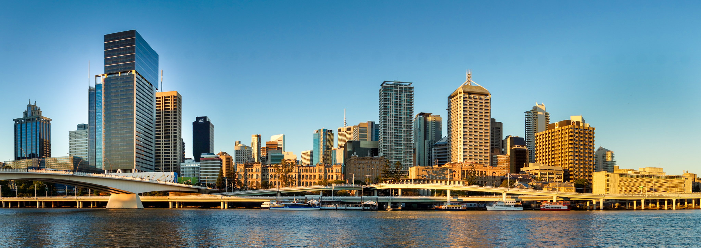
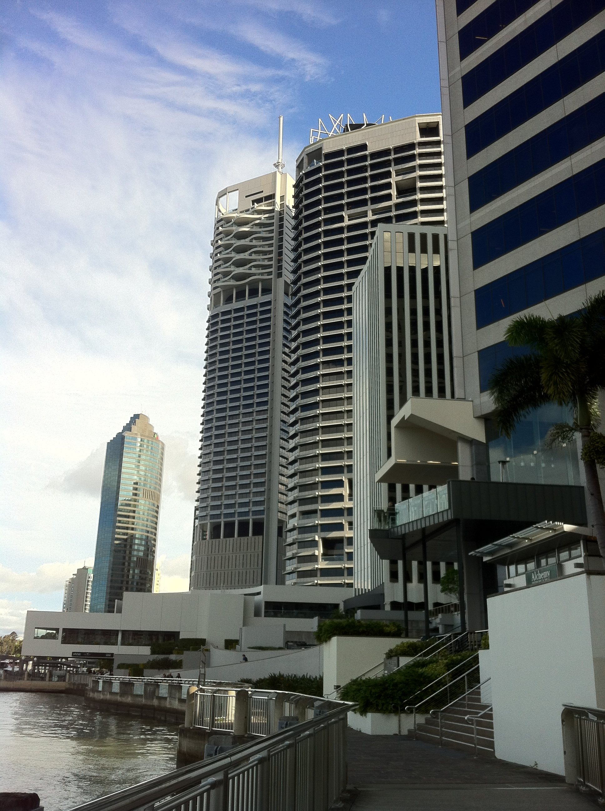
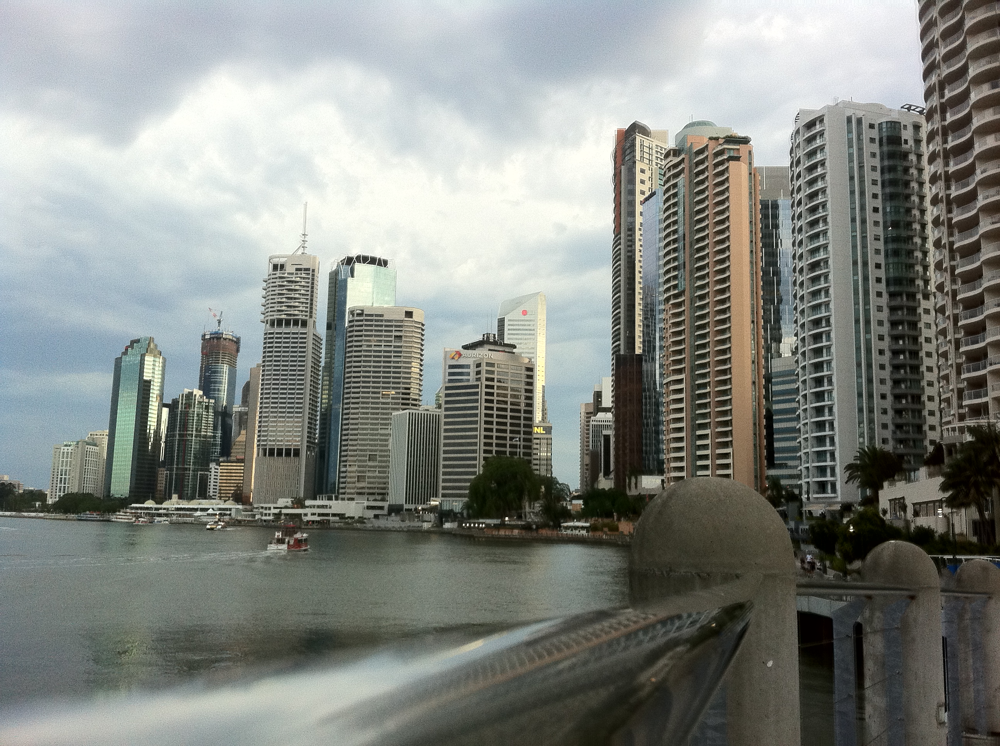
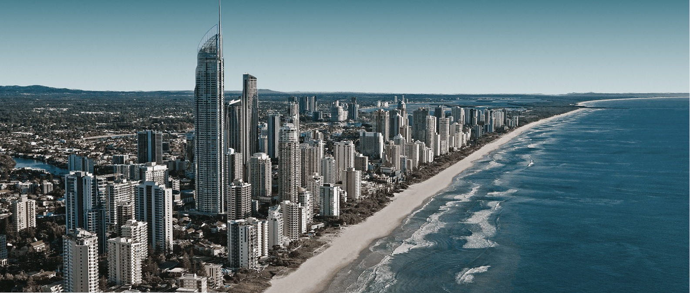
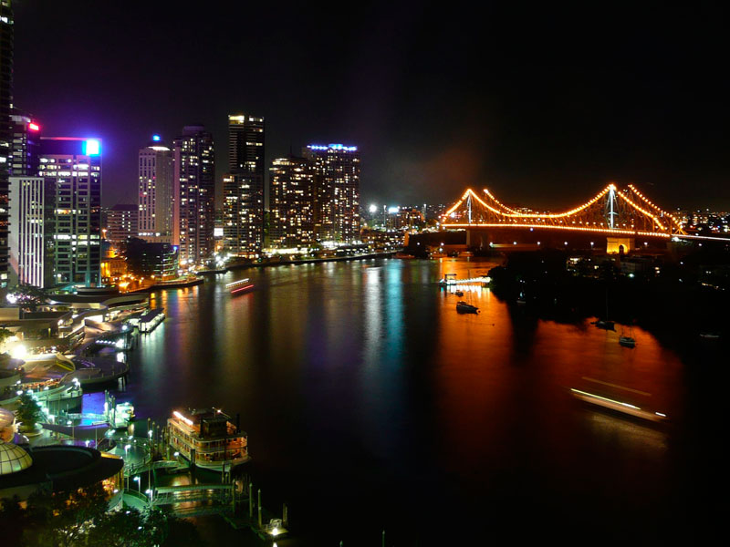

Australia's Primary Holiday Destination
Brisbane is Australia's third largest city, capital of Queensland on the East coast 450 miles north of Sydney. Colloquially known as BrisVegas for its holiday destination reputation, it is also discussed as the Los Angeles of Australia for its unbeatable climate, fantastic surrounding terrain with world-class beaches and cultural similarities. Just out of the city to the north and south are the Sunshine and Gold Coasts which contribute massively to Brisbane's offering of a most desirable lifestyle.
By outward appearance Brisbane is a modern city, with the echoes of its colonial past observed in the classic architecture of the sandstone buildings which now stand side by side with modern towers. Galleries, theaters, quality shopping, international cuisine and vibrant nightlife provide a dynamic lifestyle.
To the south is Gold Coast, with its 42km of golden beaches, world class attractions and rainforest hinterland. To the north is Sunshine Coast, home of the Noosa resort area. The sheltered waters of Moreton Bay are protected from the rolling surf of the Pacific Ocean by Moreton, North and South Stradbroke Islands and are home to many wildlife including dolphins, turtles and dugong.
View of the city from South Bank. Brisbane's Conrad Treasury Casino is housed in the palatial sandstone building that was once Queensland's Treasury. The Riverside Expressway can also be seen, part of the Pacific Motorway.
Along the City Reach Boardwalk, which is popular at lunchtimes with nearby workers. The Blackbird restaurant here offers brilliant seafood - including Moreton Bay bugs!
The free CityHopper shuttle ferry of Brisbane's transport system can be seen crossing the Brisbane River.
Only 50 miles south of Brisbane is the Gold Coast, Australia's most popular holiday destination. It boasts an average water temperature of 22 degrees, expansive white sandy beaches, rainforest, a vast array of holiday accommodation options, and more than 500 restaurants and 40 golf courses.
A river city such as Brisbane relies on its bridges, and in the background in this nighttime shot is the Story Bridge. This bridge is always lit at night on a revolving colour scheme. At the annual Riverfire celebrations in September the beauty of the Story Bridge is magnified with fireworks.
An aerial flyover of a digital version of Brisbane, from Microsoft Flight Simulator. This in-game footage showcases Brisbane, starting at South Bank, moving over to the Treasury Casino and ending over the Story Bridge.
Please provide us with your basic contact information.